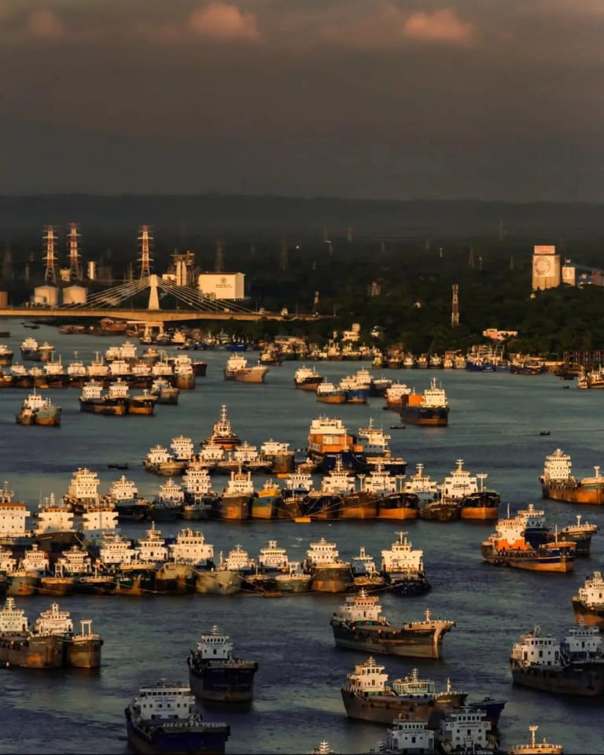

TREE,CLOUD,NARROW ROAD,HUT,BUILDINGS,BIRD,ANIMALS,WATER,RESTAURANT,FOOD, The Most Beautiful Hiking Trails in Eastern PohorjeListen to audio excerpt The Slovenes have always had a strong connection with hiking, as they live in a wonderful land, full of both internationally-recognised as well as hidden and undiscovered natural and cultural gems. The entire country is interlaced with kilometres of well-marked hiking trails as well as lots of interesting and educational theme trails. In this article, I’ve decided to present the trails in Eastern Pohorje and its edges that I find the most beautiful.

Lake Garda Lake Garda is a beautiful glacial lake nestled in the Alps in northern Italy. It borders three regions – Trentino in the north, Lombardy in the west and Veneto in the east. It attracts tourists, since it offers a lot of activities and everyone can find something to their liking. The lake is an excellent idea for a multi-day trip in any season. Nearby are beautiful small and large towns with castles and fortresses by the water, nice medieval squares, hotels, camps, beaches, parks and children’s playgrounds, cycling and hiking trails, restaurants and ice cream shops.
A Trip to MexicoListen to audio excerpt Visiting Yucatan Our long-planned holiday finally arrived and it was time to travel to Mexico. Our journey took us to Yucatan, a peninsula in the Gulf of Mexico. It’s a wonderful part of Mexico that’s very distinct, thanks to the influence of the Maya culture. It’s a land of kind people, beautiful cities and breath-taking landmarks.